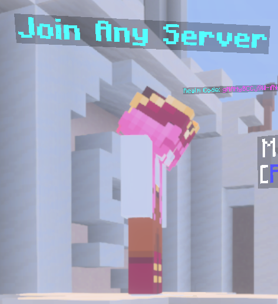
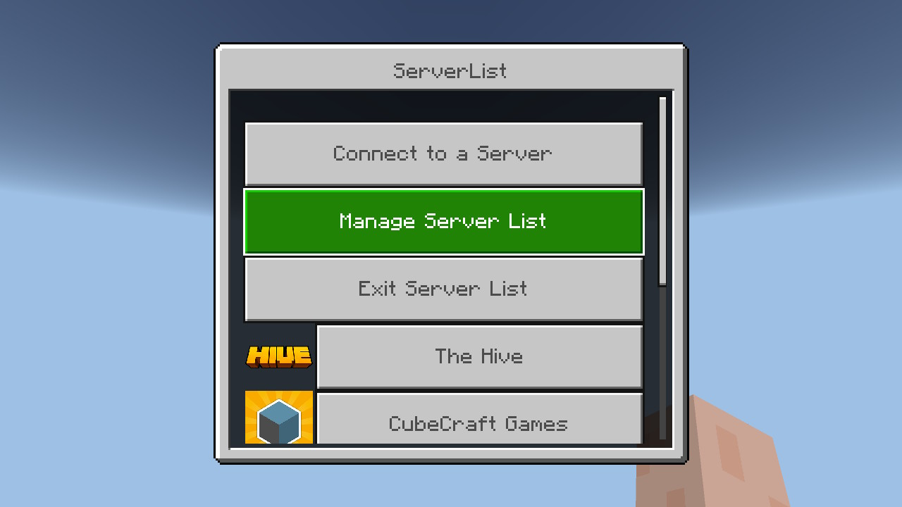

Cómo entrar a un servidor de Minecraft desde consola
2 metodos verificados en una consola Nintendo SwitchAviso: Alessio2122 no se hace responsable de lo que pueda ocurrir a tu consola si ejecutas mal los pasos. Sigue la guía a tu propio riesgo. Recomendamos leer el texto varias veces antes de ponerse a ello.
Introducción
Creo que todos sabemos el dolor de cabeza que es intentar entrar a un servidor de Minecraft desde cualquier consola. Para los que no lo sepan, las consolas tienen una versión de Minecraft Bedrock, que a diferencia de Minecraft Java o Minecraft Bedrock para ordenadores y dispositivos móviles, no nos permite añadir servidores que no sean los predeterminados, los aprobados por Mojang.
En está guía tenemos 2 de los mejores métodos que he encontrado para que podáis jugar con vuestros amigos sin perder la cabeza en el intento. Están ordenador por dificultad y mi criterio propio.
Materiales necesarios
- La consola que tengas.
- El juego Minecraft oficial (con versiones falsas o no oficiales es muy probable que no funcione esta guía).
- Conexión a internet (si tu consola necesita una subscripción, como la Switch o la PS, deberás tenerla).
- Cuenta de Microsoft ya inciada en tu consola.
- (Acceso a la configuración de tu consola para el método 2).
Método 1: Entrar al Realm de Bedrock Server Hub
Este es el método más seguro ya que es un servidor intermediario que te permite entrar a tu servidor desde él. El problema es que tiene anuncios y estos molestan un poco.
Paso 1: Añadir el Realm de Bedrock Server Hub
Para entrar en Bedrock Server Hub, debes ir a "Jugar" y después a "Realms" debes añadir uno nuevo en "Unirse a un Realm" o "+ Añadir/Unirse al Realms", si ya tienes Realms, en el código debes poner gMAHyBCCj9W-fNg y finalmente pulsa "Unirse" y "Unirse" otra vez.
Paso 2: Añadir el servidor dentro de Bedrock Server Hub
Ahora tienes el Realms en tu lista. Pulsa en él y entra dándole a "Jugar". Puede ser que la primera vez aparezca un texto diciendo que tienes que descargar unos archivos. Por lo que he probado, debes descarharlos, porque sino, no podrás entrar.
Ya que estás dentro, la primera vez te preguntara de qué consola eres, debes elegir correctamente la tuya. En la parte derecha cuando entraste debe aparecer un NPC que tiene encima un texto como "Join any server", como este:
Habla con él y aparecerá un menú, para añadir un servidor debes darle a "Add New Server" allí escribe la IP y el puerto (port), que deberías conocer, en cada uno de los campos. Cuando lo tengas, pulsa "Enviar". Finalmente, selecciona el servidor que acabas de añadir y... (oh, claro, anuncios...) cada vez que salga un anuncio, espera a que suene un sonido de experiencia y pulsa "Close and proceed" porque si no esperas volverá a salir el anuncio.
Ahora sí, ya estás en tu servidor.
Opinión
Es impresionante que solo usando un Realms gratis puedas entrar a cualquier servidor configurado para que puedan entrar jugadores de Bedrock. Hay tantos anuncios porque mantener un servidor en línea no es gratis. Este Realms ha sido creado por OniionCraft.
Método 2: Utilizar Bedrock Connect (cambiar las DNS)
Un clásico, ¿no puedes hacer algo? cambias las DNS. Supongo que la gente que esté leyendo esto se habrá quedado con cara de poker, "¡¿QUÉ SON LAS DNS?!". Unos códigos que permiten a tu consola ir por servidores distintos a los que debería entrar. Por eso mismo, no es muy seguro, no sabemos por dónde podría pasar tu información, pero para la gente arriesgada, os lo explico:
Paso 1: Cambiar las DNS de tu consola
Cada consola tiene su sistema, pero estos son los pasos comunes en casi todas:
- Ve a la configuración de tu consola.
- Busca la sección de internet o redes.
- Encuentra tu Wi-Fi.
- Encuentra algún botón de configurar esa Wi-Fi.
- Cambia las DNS a manual y pon las siguientes DNS:
- DNS primario:
104.238.130.180(en PlayStation son45.55.68.52). - DNS secundario:
001.001.001.001. - Guarda los cambios y entra al juego.
Paso 2: Añadir el servidor
Vale, pues con las DNS cambiadas ve a "Jugar" y "Servidores". Entra en cualquiera de ellos, porque dentro de cada uno saldrá una interfaz como esta:
Entra en "Manage Server List" y después en "Add Server". Ponle el nombre que quieras, la IP y el puerto (port),activa el selector de "Add to server list", pulsa "Enviar". Ya está el servidor en la lsita de Bedrock Connect, no de Minecraft.
Para entrar solo pulsa el servidor y... (¡no hay anuncios!) ya estás en tu servidor.
Opinión
Aunque lo de cambiar las DNS se haya hecho desde siempre, es muy interesante que puedas llegar a tu servidor con solo cambiar unos números.
Este servicio es mantenido por Bedrock Connect.
Bajo mi recomendación, deberías cambiar las DNS a automático cada vez que no juegues a esos servidores, simplemente por seguridad.
Conclusión
Hasta aquí esta guía, la gente que ha programado estos servicios nos han ayudado un montón, porque si Mojang no lo permite, seguro que hay gente que lo intenta, lo programa y se esfuerza, y se llega a conseguir eso que tanto queríamos, poder jugar con nuestros amigos en consola. Estos desarrolladores se merecen un aplauso.
Si has aprendido algo, hazmelo saber en los comentarios en mi canal de YouTube. Muchas gracias a los que estén leyendo esto y también a los developers que tanto ingenio tienen.